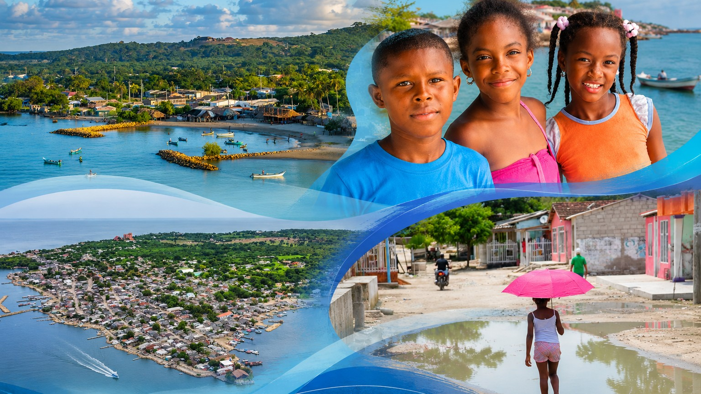

Misión
Impulsar iniciativas de comunicación, cultura, inclusión digital e innovación social que fortalezcan las capacidades de las comunidades, promuevan la participación y contribuyan a la transformación de sus realidades.
Somos la Corporación Insular Digital, una organización que impulsa iniciativas de comunicación, cultura, inclusión digital e innovación social, conectadas con las capacidades y realidades de la comunidad.

La Corporación Insular Digital (COINDI) es una organización comprometida con el desarrollo de iniciativas que relacionan comunicación, cultura, tecnología y participación comunitaria.
Nuestro trabajo parte del reconocimiento del territorio, sus saberes, sus expresiones culturales y las capacidades de las personas para proponer y construir oportunidades.
Impulsamos espacios de aprendizaje, creación y comunicación que buscan aportar al fortalecimiento comunitario y a la apropiación de herramientas digitales.
Un propósito institucional se construye con acciones coherentes, participación y compromiso con la comunidad.
Impulsar iniciativas de comunicación, cultura, inclusión digital e innovación social que fortalezcan las capacidades de las comunidades, promuevan la participación y contribuyan a la transformación de sus realidades.
Consolidarnos como una organización reconocida por su trabajo territorial, su capacidad de conectar comunidad y tecnología, y su aporte a procesos de comunicación, aprendizaje, cultura e innovación social.
Nota: los textos de misión y visión de esta página son una propuesta de redacción institucional. Antes de publicarlos como formulación oficial, deben contrastarse con los estatutos y las decisiones formalmente aprobadas por COINDI.
Esta convicción inspira la manera en que nos relacionamos con las personas, acompañamos iniciativas y reconocemos el valor de las ideas que nacen desde el territorio.
Estos principios propuestos expresan el enfoque que queremos reflejar en nuestras iniciativas y relaciones con la comunidad.
Escuchamos las necesidades y reconocemos las capacidades de las personas y organizaciones del territorio.
Valoramos las memorias, los saberes, las expresiones y las historias que forman parte de la identidad territorial.
Exploramos herramientas e ideas que puedan aportar soluciones pertinentes a las realidades de la comunidad.
Promovemos espacios para compartir ideas, crear colectivamente y contribuir a las iniciativas comunitarias.
Reconocemos que el trabajo articulado permite aprovechar capacidades y construir objetivos compartidos.
Buscamos actuar con seriedad, cuidado de los recursos y coherencia entre nuestros compromisos y nuestras acciones.
Los principios anteriores son una propuesta de presentación web; no deben interpretarse como una transcripción de los estatutos.
COINDI cuenta con una estructura institucional y desarrolla su trabajo mediante la colaboración de las personas vinculadas a sus iniciativas.
Instancia integrada por los fundadores de la Corporación, de acuerdo con las disposiciones estatutarias aplicables.
Órgano de dirección de la Corporación, conforme a las funciones y competencias establecidas en sus estatutos.
Lidera y acompaña el desarrollo de las iniciativas y la gestión institucional, de acuerdo con las funciones que correspondan formalmente a este cargo.
Estas áreas representan frentes de trabajo que pueden contar con la participación y el apoyo de integrantes de la Junta Directiva y otras personas vinculadas. No se presentan como cargos ni coordinaciones formalmente designados.
Apoyo a la planeación, organización y desarrollo de actividades de inclusión digital, formación y creación.
Trabajo relacionado con la comunicación institucional, la producción de contenidos y las iniciativas de comunicación comunitaria.
Apoyo a las actividades de organización documental, seguimiento de procesos y gestión interna.
Colaboración en el seguimiento de recursos y necesidades financieras, de acuerdo con las responsabilidades y controles que correspondan.
Desde COINDI impulsamos programas sociales y una iniciativa de comunicación comunitaria que contribuyen a desarrollar nuestro propósito institucional.
Una iniciativa orientada a fortalecer las capacidades digitales de personas de distintas edades mediante aprendizajes prácticos, apropiación tecnológica y herramientas útiles para la vida cotidiana.
Conocer los programasUna iniciativa de creación audiovisual y contenidos digitales que busca abrir espacios para contar historias, explorar la creatividad y visibilizar las voces del territorio.
Conocer los programasUna iniciativa de comunicación comunitaria vinculada a COINDI, enfocada en las historias, las voces y los acontecimientos de la comunidad insular.
Visitar TeleinsularCreemos en la colaboración con personas, colectivos, organizaciones e instituciones que compartan el interés por aportar al desarrollo comunitario.
Conocer cómo apoyarTeleinsular se presenta como una iniciativa de comunicación vinculada a COINDI, no como un tercer programa social.
Conoce nuestras iniciativas y explora formas de colaborar con el trabajo de la Corporación Insular Digital.